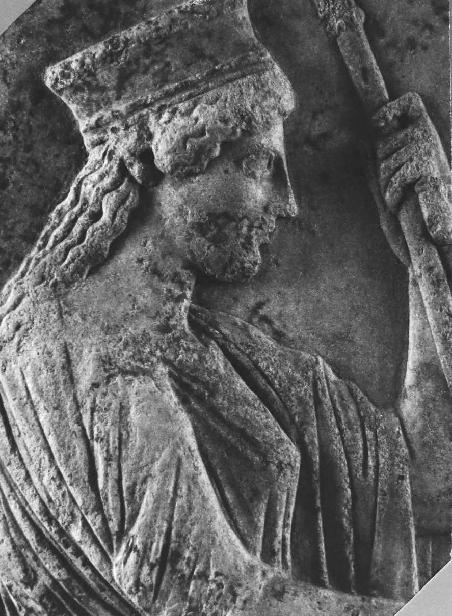

I’m standing in front of the breathtaking Acropolis Museum. Brainchild of the Swiss-French architect Bernard Tschumi, the design received high honors from the American Institute of Architects in 2011. And rightly so. The whole structure floats majestically over existing excavations, all visible underfoot as you ascend a translucent ramp to the front entrance. Natural light floods the high-ceilinged interior of the ground level, the result of Tschumi using “contemporary glass technology to protect against excessive heat and exposure.”1 The effect is absolutely hypnotizing on the top floor, where forty-eight modern columns create a colonnade in the exact configuration that would have formed the original cella of the ancient Parthenon. Glistening in the sun are the original, pristine marbles of the temple’s frieze, the half that weren’t stolen by Lord Elgin and deposited in the British Museum in the early nineteenth century. Unfortunately I’m not here to enjoy any of it for long.
Before my meeting with Kalliope Papangeli in Eleusis, the only thing I’ve come for is a guidebook. I’m hoping for a little more background on the recent show I just missed, Eleusis: the Great Mysteries. I purchase a copy of the very elegant burnt-orange exhibition catalogue from the open-air museum shop and head to one of the long wooden benches in the spacious foyer. The cover features a 4-by-7-inch cardboard insert of a robed, scepter-bearing Demeter in profile, facing right. It’s a close-up photograph of the marble stele in the National Archaeological Museum, dated between 470 and 450 BC. The goddess’s right hand can’t be seen in the image, but the original holds a sheaf of grain stalks.

Demeter gracing the cover of the Acropolis Museum’s guidebook from the 2018 exhibit Eleusis: the Great Mysteries. Courtesy of the Acropolis Museum and the Archaeological Museum of Eleusis, Ephorate of Antiquities—Western Attica (© Hellenic Ministry of Culture and Sports)
In his catalogue introduction Dr. Demetrios Pandermalis, president of the Acropolis Museum, calls Eleusis “the most prominent” of all the visionary mystery cults, promising “personal bliss in life and happiness after death.” Even so, he includes the kind of perfunctory sketch of the kukeon that would make Fritz Graf proud: “potential initiates would break their fast by drinking the kykeon [an alternative English spelling], a mixture of water, flour and royal mint.” Full stop. Then, as Pandermalis closes his brief summary of the Mysteries, he grabs my full attention: “It is our hope that this exhibition will be the herald for the celebratory year 2021, when Eleusis will serve as the cultural capital of Europe. Within the captivating sacred silence of that site we await the humming sounds of new initiates.”
A quick tour of eleusis2021.eu confirms what, for me, is breaking news. Director Adam-Veleni had mentioned something about this festival in passing, but I guess I was distracted by all the talk of the Great Library, the missing 99 percent of classical literature, and psychedelic witches. After more than sixteen hundred years in the shadows, Eleusis is once again taking the world stage. This time in a series of European Union–financed educational and arts initiatives across four main themes:
The “Demeter—Mother Earth” programme focuses on our relationship with food. The “Persephone” programme focuses on our relationship with urban green areas, gardens and flowers. The “Ecoculture” programme focuses on climate change, energy and recycling. Finally, the “Feminine Nature” programme focuses on cultural heritage and femininity.
A letter on the website from the mayor of Eleusis, Giorgos Tsoukalas, laments the industrialization that overran the ancient city toward the end of the nineteenth century, leaving a “powerful footprint in the form of a series of derelict factories along the coastline” that now overlooks the otherwise crystalline Gulf of Elefsina.2 As if the Church hadn’t adequately wiped the sanctuary off the map back in the fourth century AD, Tsoukalas quotes Nikos Gatsos, a twentieth-century Greek poet, to capture the scope of the modern desecration: “Where the initiates joined hands reverently before entering the sanctuary / now the tourists discard cigarette butts / and visit the new refinery / Sleep, Persephone, in the earth’s embrace / come out no more to the balcony of the world.”3
Just when there was no hope for the deteriorating town, the diplomats in Brussels come bearing a quintessentially Eleusinian gift: resurrection. A public festival known as the “Contemporary Mysteries” is in the works, along with myriad events and activities centered on the very twenty-first-century theme of reconnecting to Mother Nature. It comes at a time of unprecedented planetary crisis, hastened by climate change. The decline of mammals, birds, fish, reptiles, and amphibians by an average of 60 percent since 1970 “threatens the survival of human civilization.”4 Some scientists are calling this the “sixth mass extinction event,” the likes of which have only occurred five other times in the past 443 million years. In the past, such events could result in the disappearance of 95 percent of all life on Earth.5
We are a fragile species on a fragile planet.
The Ancient Greeks knew that. Death was always lurking just around the next corner. But Eleusis was there to defend them against whichever Greek word you prefer: cataclysm, catastrophe, holocaust, apocalypse. Scrolling through my phone in the museum foyer, I can’t help but think of Vettius Agorius Praetextatus, a high-profile aristocrat of the fourth century AD. A prefect, consul and hierophant (literally, a priest who “shows the sacred things”), he held a number of respected political and religious positions in the Roman Empire. And like Cicero and Marcus Aurelius before him, Praetextatus was also initiated into the Mysteries. He was one of those cosmopolitan Romans who felt there was something truly extraordinary about Eleusis. Whatever the sublime vision revealed about the nature of existence, there was more at stake than just personal salvation. Much more.
In AD 364, the Christian emperor Valentinian abolished all nocturnal celebrations in an effort to shut down the Mysteries. The almost two-thousand-year march of pilgrims to Eleusis was in serious jeopardy of screeching to a halt. The Greek historian Zosimus credits Praetextatus with successfully convincing the powerful Valentinian to backtrack, permitting “the entire rite to be performed in the manner inherited from the ancestors.” But it’s what the initiate says to the emperor that, among all the strange things about Eleusis, always struck me as the strangest by far. It’s a prophecy of sorts. Faced with the obliteration of “the most sacred Mysteries,” Praetextatus declares that the shortsighted law “would make the life of the Greeks unlivable.” Having drunk the kukeon and experienced the vision for himself, the priest points to Eleusis as the one place that “hold[s] the whole human race together.”6
The Greek word for “unlivable” is abiotos (ἀβίοτος)—literally, the absence or opposite of “life” (bios). It’s a rare, evocative word. The eminent Hungarian scholar Carl Kerenyi is fascinated by it in his seminal 1962 book on the Mysteries, written in German, Die Mysterien von Eleusis. Kerenyi concludes that the word was consciously chosen to inform later generations that the Mysteries “were connected not only with Athenian and Greek existence but with human existence in general.”7 The prophecy comes at a critical moment in the history of Western civilization when very little stood between Eleusis and the torches and pitchforks of the Christian mobs.
“Beyond any doubt,” says Kerenyi, a distinct contrast is being drawn between the lovers of Demeter and Jesus: “the sharpness of the formulation of the significance of Eleusis, which has no parallel in earlier documents, springs from the conflict between Greek religion and Christianity.”8 In the epic battle of competing faiths that would erupt into the identity crisis we still suffer today, it was only the Mysteries that could guarantee a sustainable future for the human species, and the planet. According to Praetextatus, the temple of Demeter housed something indispensable that was utterly lacking in the Christian faith. Without that original sacrament, “inherited from the ancestors,” we would all be doomed.
Why? How exactly did Demeter prevent not just Greek existence, but human existence, from becoming “unlivable”? How did the goddess whom Ruck refers to as the “Earth Mother” put our species in accord with nature? For the disgraced classicist, it’s all about the Secret of Secrets, a phrase he coined to describe the archaic tradition of agricultural and biochemical expertise that was somehow able to manufacture the kukeon year after year. A vast trove of mysterious lore “passed on by word of mouth from herbalist to apprentice” throughout the long life of the Mysteries.9 The harvesting of the ergot-infected grain and the mixing of the sacrament are believed to represent the “origin of all human science” that reveals the mystery of death and rebirth.10 But because of the volatile properties of ergot, the production of the magic potion is only possible when the untamed lives in harmony with the domesticated. That trademark balance between yin and yang that the Greeks identified as chaos and cosmos. Literally, chaos (χάος) is the “infinite darkness” of “unformed matter” that existed in the “first state of the universe.” While cosmos (κόσμος) is the “natural order” of the final product that we now glimpse in the night sky.
Trained by the female elders, the priestesses would have overseen the cultivation of the fields at Eleusis. Ruck sees that painstaking process as the thin line between the “wild, nomadic” ways of a prehistoric era and the “civilized institutions” rooted in the Greeks’ biotechnology.11 Grain itself is a curious creature, “carefully evolved from more primitive grasses.”12 When the crops are not “tended with proper care,” a dangerous weed begins to grow. It is barley’s evil stepsister, darnel. The scientific name is Lolium temulentum. In Ancient Greek, it was aira (αἶρα)—a plant associated with “divine frenzy.” The funny thing about darnel or aira is that it serves as an excellent host for, what else, ergot. The job of the priestesses, Ruck contends, would have been to monitor closely the growth of the darnel and ergot so that neither got out of control. Too much, and the deadly weed and fungus can ruin the entire crop, threatening life itself. Too little, and there’s no active ingredient for the kukeon. Only when chaos and cosmos work together do the raw psychedelic ingredients of the sacrament result. And only when the ordered, rational psyche is overwhelmed with a proper dosage of ergot-derived alkaloids does the disruptive, irrational vision result, “a sight that made all previous seeing seem like blindness.”13 What Ruck calls “the culminating experience of a lifetime.”14
Under the visionary spell of the kukeon, Persephone is thought to have revealed the mystery of death and rebirth directly to the initiates. That’s why Demeter set up the Mysteries of Eleusis in the first place, so Persephone could establish a personal relationship with each of the pilgrims. According to Ruck they would meet her face-to-face in that liminal space between this life and the next, convinced they had been given access to the true nature of reality. In the underworld that had invaded Demeter’s temple, they would witness Persephone give birth to a Holy Child. It’s unknown whether Persephone was there in the flesh, perhaps played by a Greek priestess, or wholly envisioned in the mind’s eye. Maybe it was some special combination of the two that the ergot facilitated. The point is, the initiates believed it.
They apparently couldn’t explain the vision away as wacky hallucinations, rattled brain chemistry, or wishful thinking. For those who had drunk the kukeon, it was a peek into another, freestanding reality. Similar to the one Gordon Wasson described back in the 1950s as crisper, sharper, brighter, and “more real” than the black-and-white, “imperfect” version we accept without question, day after day. In The Varieties of Religious Experience from 1902, psychologist William James used the term “noetic quality” to capture those rare moments of insight “into depths of truth unplumbed by the discursive intellect.”15 The mystic can experience “illuminations, revelations, full of significance and importance, all inarticulate though they remain; and as a rule they carry with them a curious sense of authority for after-time.”16 Perhaps what the Mysteries offered was the kind of ego-dissolving insight that was always cherished by the Christian mystics and suppressed by the Christian establishment. Once you become a mystic, there’s no unseeing God.
After a brush with what Aldous Huxley calls the “unfathomable Mystery,” things are never quite the same for modern initiates either. Across the board, volunteers in the Hopkins and NYU experiments report becoming better versions of themselves—more open, more compassionate, more forgiving, more loving.17 “Bathed in God’s love,” atheist Dinah Bazer was finally able to appreciate and connect with people on a profound level for the first time in her life. When we spoke, she described falling in love with her family all over again. She recalled being surprised by the sheer goodness of others: “I don’t think I realized how genuine people were until after this experience!”
But it wasn’t an indulgent, self-obsessed New Ager that exited the psilocybin session, someone on the narcissistic hunt for her personal happiness and well-being. It was a “socially conscious” Dinah, who felt an innate sense of belonging as a fully-fledged member of the human tribe, passionately concerned about the future of the planet that her grandchildren’s generation will inherit. Some have begun referring to this effect as the “science of awe.” A recent article in Psychology Today explains the phenomenon as “a sense of embeddedness into collective folds and an increase in pro-social behaviours such as kindness, self-sacrifice, co-operation and resource-sharing. Experiences that arouse awe can help us to re-conceptualize our sense of self, our role in society and from a more cosmic perspective, our place in the universe.”18
Clinical psychologist William Richards, the longtime collaborator in the Johns Hopkins psilocybin trials, concludes that ethics and morality are hardwired, “perhaps genetically encoded,” within the human organism.19 Psilocybin appears to unlock that code by tapping directly into what the mystics have been trying to mine over the history of Christianity with all their chanting, meditation, fasting, and prayer. And what the religious authorities try to beat into young children. As if decency and virtue were things to be learned, rather than natural impulses to be coaxed into expression.
Is this what Praetextatus meant by Eleusis holding “the whole human race together”? And life becoming “unlivable” in their absence? Did the transformational inner journey unleashed by the kukeon remind us how to care for one another and the planet? Was this the true technology on which Western civilization was built? Is a society that fails to incorporate this mystical experience fundamentally flawed, its institutions empty of the shared vision that made the world’s first democracy actually work?
If so, that could very well explain the obvious distinction Praetextatus was trying to make between Eleusis and Christianity. By the fourth century AD the Church’s mainstream Eucharist of ordinary bread and wine had replaced whatever heretical sacraments came before, as we will fully explore in the second half of this book. But another part of the campaign to rid the world of pagan influence, argues Ruck, was Christianity’s exclusion of women from positions of leadership—the same women, the grandmothers, who were so integral to sustaining the Secret of Secrets in Ancient Greece.
Like many pre-Christian cultures, the Greeks revered the goddess in three principal forms: the young virgin (Persephone), the adult mother (Demeter), and the old crone (Demeter, once Persephone had given birth during the climax of the Mysteries). According to Ruck, Demeter’s transition to grandmother brings her closer to death and confers on her a mysterious “power over plants.” As she continues to mature, only then does the “female’s ancient religious power” come to perfection “through her awesome compact with the terrible metaphysical sources of life.”20 Just like the Pythias at the Oracle of Delphi, whom the Greek historian Diodorus Siculus tells us were always over the age of fifty, Demeter in her new incarnation as the “prototypic witch” also inspired the Eleusinian priestess.21
Isn’t it strange that the Christian holy family—Father, Son, and Holy Spirit—is an all-male ensemble? And isn’t it even stranger that the only woman worshipped alongside the Trinity never becomes a grandmother? The Church would prize Mary’s virginity and motherhood above all else. Instead of marveling at the grandmother’s botanical know-how, the Church would demonize it. After the fourth century AD, Demeter and the old-crone archetype slowly disappeared. The same woman hunted by the Inquisition would eventually become the spooky lady stirring the bubbling green goop in the cauldrons of our Halloween books and Disney movies. The evil sorceress, up to no good. But according to Maria Tatar, who chairs the Program in Folklore and Mythology at Harvard University, “old women in fairy tales and folklore practically keep civilization together. They judge, reward, harm and heal. They’re often the most intriguing characters in the story.”22 And they are the most intriguing real-life characters of this investigation, as we will see in detail in the Vatican’s Archive of the Congregation for the Doctrine of the Faith.
I slip my phone back into my pocket and stare at Ruck’s “Earth Mother” on the cover of the exhibition catalogue. So that’s why the Acropolis Museum decided to host Eleusis: the Great Mysteries—to create a little momentum for the ancient sanctuary’s metamorphosis into the European Capital of Culture in 2021. When the European Union talks about restoring our relationship with Demeter and Persephone, and reviving the “Feminine Nature” of Eleusis, I doubt Ruck’s forty-year-old theory about a secret sisterhood of psychedelic priestesses is what they have in mind. No one in the “Contemporary Mysteries” festival is going to be throwing back an ergot-infused barley potion. Still, I can’t quite grasp why anyone is paying attention to Eleusis, a small town of about thirty thousand people. Why now? A site once sacred to Mother Nature, today choked by oil refineries and cement factories. I get the metaphor. But for those of us stuck in the past, there’s more meaning here.
I step outside into the blinding sun of a flawless Friday to continue meditating on Praetextatus’s prophecy. And to visit the one place in Athens where the Ancient Greeks could never deny the awesome power of the Earth, or her unlimited supply of natural drugs.
I head a few yards north to the perimeter of the rocky citadel that juts from the ground, the Parthenon perched on its peak. The tourists are out and about now, making the walk a little less pleasant than this morning’s. But as I reach the world’s first theater, cut directly into the southern slope of the Acropolis, the crowds dissipate. I take a seat on one of the stone benches in the semicircular terrace facing the absent stage. Tufts of grass sprout between the marble thrones of the front row, where the priest of Dionysus and other VIPs may have enjoyed the performance in the same drugged stupor as the Greeks in the nosebleeds at the back.
Euripides, Aeschylus, Sophocles, Aristophanes—they all competed here to curry favor with the God of Ecstasy during the Great Dionysia at the beginning of spring. Unlike us today, the Greeks had no firm boundary between religion and entertainment.23 The whole point of the performance was to “approach more nearly to the presence of their divinity.”24 No different from Eleusis. Dionysus wasn’t symbolized by the wine … he was the wine. When a Greek celebrant ingested the fruit of the vine, she ingested the god himself. How else do we explain the concept of “enthusiasm” (derived from entheos (ἔνθεος), meaning “divine frenzy” or “god-possessed inspiration”), considered the “one quality … more than any other” that gave birth to tragedy?25 The British scholar Peter Hoyle best described how “at that moment of intense rapture,” Dionysus’s maenads, or female devotees, “became identified with the god himself.… They became filled with his spirit and acquired divine powers.”26
According to Ruck, “the nature of the theater experience was one of mass spiritual possession” that can be traced back to shamanic rituals “at the tombs of heroic persons, with the spirit of the deceased overtaking the priest and speaking through him or her to tell the dead person’s story or myth.”27 The Greeks brought this “dangerous intoxication of the god” from the primordial countryside right here, to the very center of our ancient democracy, where the poetry of drama turned the unique Athenian dialect—known as koine (κοινῆ) or “common” Greek—into the language of the New Testament. Our ancestors could quote the Greek uttered in this amphitheater as easily as we might quote favorite lines from Hollywood. So koine persisted well past the Gospels, becoming the lingua franca of the Church Fathers and the early Byzantine Empire. To this day it remains the liturgical language of the Greek Orthodox Church.
Behind it all was the special wine that was served in this theater: trimma (τρῖμμα), which literally means something “rubbed” or “pounded.” Ruck explains the drink took the name from whatever additives were “ground” into the potion to produce “a communal feeling of oneness” among the spectators, “with their shared cultural identity and with the spirits who were the city’s metaphysical allies from the otherworld.”28 The “bewitching” that began with the actors, who drew down their ethereal characters through the magnets of makeup and wardrobe, would soon be transferred to the audience, “all attuned to the ghostly possession.”
I can only imagine the atmosphere in 405 BC, when Euripides’s The Bacchae debuted here, just after the playwright’s death. How could he possibly have missed the show that would become the greatest tribute to the Dionysian Mysteries that antiquity ever produced? We know almost as little about the wine god’s secret ceremonies—or the cryptic potions that nourished them—as we know about Eleusis. But like a bible for maenads who otherwise thrived in a world of hushed oral tradition, The Bacchae left behind a thick trail of clues that we will begin exploring later in this book. Clues that lead to a magical version of Jesus: equal parts natural healer, initiator of mysteries, and concoctor of drugged wine. Unknown to many faithful today, it’s a version that places the founder of Christianity in the kind of detailed historical context that would have been self-evident to the earliest generations of Greek-speaking paleo-Christians.
Fortunately, our investigation is right on target, because one can hardly approach the God of Ecstasy without first unpacking the Mysteries of Eleusis. Before he seduced the fans of this very theater into the wild mountains and forests that would form his impromptu outdoor churches all across the Mediterranean well into the Roman period, Dionysus snuck his way into Eleusis as the child of Persephone. It hadn’t always been that way, but the miraculous birth of the Holy Child, named Iacchus, who closed the Mysteries in the temple of Demeter, came more and more to be associated with the God of Ecstasy.29
In his doctoral dissertation from 1974, Fritz Graf himself penned the definitive study on how the delirium, frenzy, and madness associated with the God of Ecstasy made their mark on Eleusis.30 Though he’s no fan of the psychedelic hypothesis, Graf freely admits the irrational aspects of the rites that once belonged to Demeter and Persephone. During our conversation over the summer, he told me, “Indeed, it’s undoubted that the initiates in Eleusis could have had, let’s say, ecstatic experiences. Or something like that. For me, the most compelling argument is that Iacchus, the god who was leading the procession to Eleusis, is understood as a form of Dionysus already by Sophocles in the fifth century. So if Dionysus is present in Eleusis, that points to experiences that for the native initiate were comparable to what you would experience when undergoing the Dionysiac rites.”31
Suddenly Praetextatus pops into my mind. Why did he schlep here, all the way from his lavish home in Rome? Would he really have trained for a year and a half, fasted for days, and walked the half marathon from Athens to Eleusis—for a second time!—just to meet a metaphor? Like every pilgrim, Praetextatus might remind us, he came to mourn with Demeter and spy Persephone and Dionysus in the flesh. And if Ruck is right, he didn’t just come to sample an innocuous potion. He came to absorb divinity. Just as the enthusiastic Pythias might find Apollo in the mind-altering laurel, or Dionysus might slither through the trimma to possess his devotees. So Praetextatus might become one with the original Holy Family, the boundary between all living things forever dissolved with what William James would call a “curious sense of authority.”
The classicist E. R. Dodds emphasizes the side effects of the original Dionysian sacrament that, very much like the kukeon of Eleusis, seems to have made life “livable” by drawing the human species and Mother Nature into a shared embrace:
… a merging of the individual consciousness in a group consciousness: the worshipper θιασεύεται ψυχὰν [“joins his soul to the group”], he is at one not only with the Master of Life but with his fellow-worshippers; and he is at one also with the life of earth.32
Whatever happened to that sacrament? In the midst of our apparent global extinction event, would Praetextatus be having his “I told you so” moment? He warned us over sixteen hundred years ago that if the Mysteries ever died … we would die. That whatever Christianity was offering, it was no match for the spiked-beer Eucharist of Demeter and Persephone or the spiked-wine Eucharist of Dionysus. How much longer can we afford business-as-usual until life becomes truly “unlivable”? We are sleepwalking toward the edge of a cliff, say the scientists, and no one seems to care.33 Praetextatus might get a real kick out of all the climate activists and conservationists slamming their heads against the wall, trying to explain the gravity of the situation to the rest of us. The vulnerability of this lonely rock hurtling through space. The importance of Mother Nature.
Perhaps the founder of the National Resources Defense Council, Gus Speth, said it best: “I used to think the top environmental problems facing the world were global warming, environmental degradation and eco-system collapse, and that we scientists could fix those problems with enough science. But I was wrong. The real problem is not those three items, but greed, selfishness and apathy. And for that we need a spiritual and cultural transformation. And we scientists don’t know how to do that.”34
But maybe the Greeks did. Maybe the momentary annihilation of the ego that Praetextatus and his fellow initiates experienced at Eleusis, or the maenads found in the ecstasy of drugged wine, was enough to glimpse the big picture. To understand that the Earth is our solitary home for the moment. That we are all in this together. And that mistreating Mother Nature is more suicide than murder. I wonder how Praetextatus would react to the crown jewel of Ancient Greece being named the European Capital of Culture after centuries in history’s landfill. Like any good initiate, on the constant hunt for omens and signs, would the Roman priest interpret 2021 as the muted dawning of a long-awaited comeback? Just when humanity is faced with the kind of threat that only comes along once every hundred million years, is this one last chance for a civilization in crisis?
For someone like Praetextatus who had experienced the visionary magic of Eleusis, it might all make perfect sense. Just as it did for Albert Hofmann, who a few months before his death in April 2008 left a concluding thought on the future promise of psychedelics:
Alienation from nature and the loss of the experience of being part of the living creation is the greatest tragedy of our materialistic era. It is the causative reason for ecological devastation and climate change. Therefore I attribute absolute highest importance to consciousness change. I regard psychedelics as catalyzers for this. They are tools which are guiding our perception toward other deeper areas of human existence, so that we again become aware of our spiritual essence. Psychedelic experiences in a safe setting can help our consciousness open up to this sensation of connection and of being one with nature. LSD and related substances are not drugs in the usual sense, but are part of the sacred substances, which have been used for thousands of years in ritual settings.35
Among other precedents, Hofmann was of course referring to his long obsession with Eleusis. In the afterword to the thirtieth anniversary edition of The Road to Eleusis, also released in 2008, the Swiss chemist invoked the same God of Ecstasy as his countryman, Fritz Graf. “The Eleusinian Mysteries were closely connected with the rites and festivities in honor of the god Dionysus,” he wrote. “They led essentially to healing, to the transcendence of the division between humankind and nature—one might say to the abolition of the separation between creator and creation. This was the real, greater proposition of the Eleusinian Mysteries.”36
Where the chemist and the classicist radically diverge, however, is on precisely how that transcendence was achieved. When I spoke to Graf, he focused on the neurochemical power of the endorphins that would have attended the initiates’ physical exhaustion after a ritual procession and several-day fast. He liked my buzz phrase, “an endogenously produced ecstatic experience.” Hofmann preferred something more than a runner’s high. As we saw in chapter 2 when analyzing the main arguments of The Road to Eleusis, he claimed the hallucinogenic ergot potion would have been easy to prepare “with the techniques and equipment available in antiquity.” Despite that conviction and several dogged attempts over the past forty years, however, nobody has ever been able to successfully reproduce the alleged psychedelic beverage in the modern-day laboratory. At least, nothing that produced the kind of experience attested at Eleusis. If one of those thirty ergot alkaloids really did the job, we still don’t know which one.
The only way to determine which Swiss scholar is right is to trek thirteen miles up the Sacred Road to see if the original religion of Western civilization is finally willing to yield any of its precious secrets. According to Praetextatus and Albert Hofmann, the fate of the world depends on it.